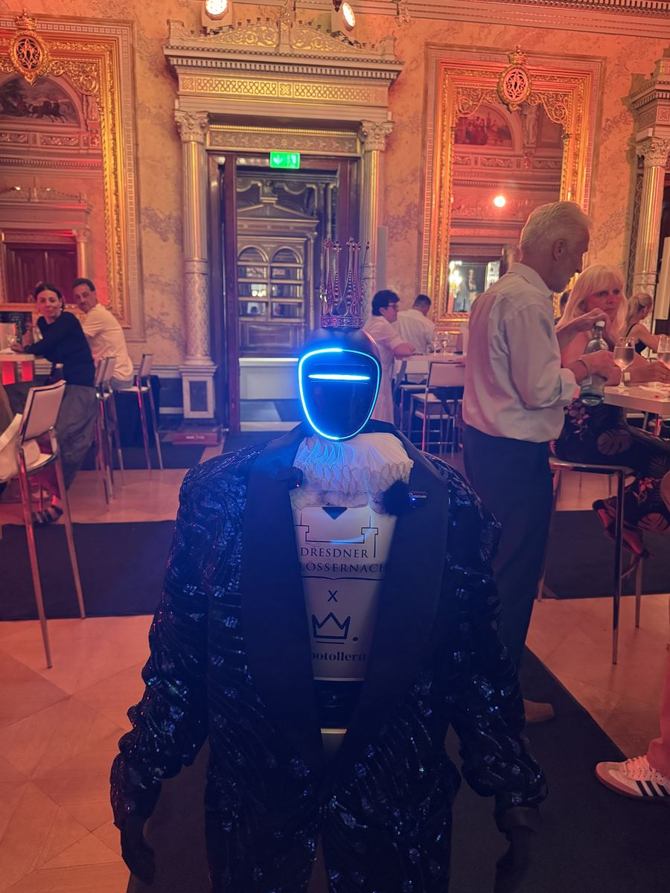
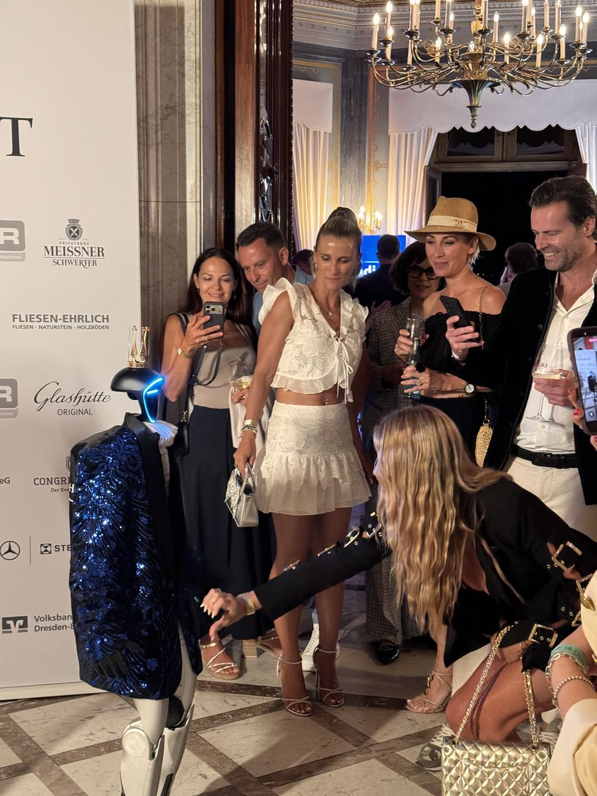
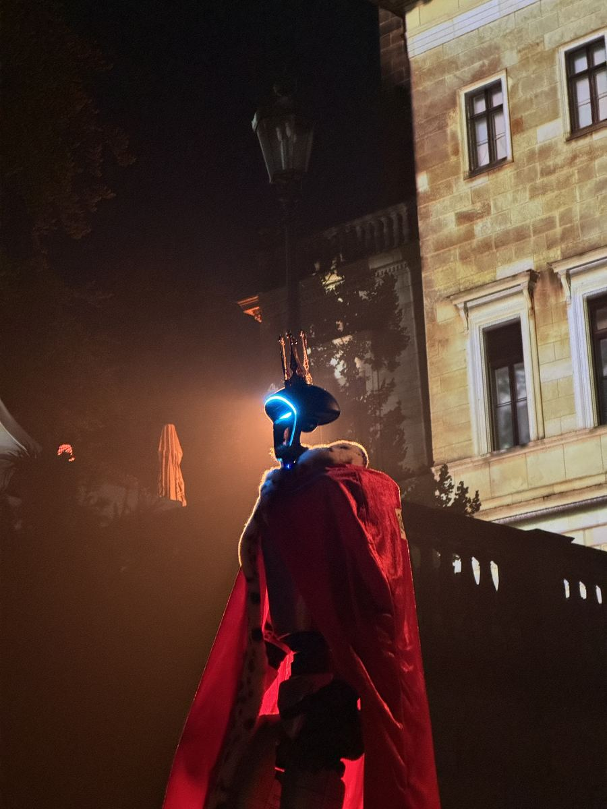

- Startseite
- Roboter mieten Dresden
Roboter mieten · Dresden · Events
Humanoiden Roboter mieten in Dresden — Unitree G1
Wir kommen zu Veranstaltungen in Dresden und Sachsen. Der Unitree G1 kommt zur Messe Dresden, ins Internationale Congress Center, in die Gläserne Manufaktur und in jedes Konferenzhotel der Stadt.

Was Sie in Dresden gewinnen
Menschen bleiben stehen
Ein laufender, gestikulierender Humanoid fällt im Raum sofort auf: Gäste bleiben stehen, fotografieren und kommen ins Gespräch.
Organisches Social Media
Fotos und Clips mit dem Roboter landen noch während der Veranstaltung in den sozialen Medien — mit Ihrem Logo auf der Brust des Roboters.
Anfahrt inklusive
Wir bringen den Roboter ohne Kilometeraufschlag nach Dresden. Der genannte Preis ist der Endpreis — ohne Überraschungen.
Dresden — Hightech und Gala-Kulisse
Dresden verbindet Hightech — Silicon Saxony, Halbleiter, Forschung — mit einer der schönsten Gala-Kulissen Deutschlands. Beides passt hervorragend zu einem humanoiden Roboter.
Die Miete eines humanoiden Roboters Unitree G1 in Dresden ist ein einfacher Weg, sich in einem dichten Veranstaltungsmarkt abzuheben. Wir liefern den G1 direkt an Ihre Location — ohne Anfahrtsaufschlag. Bedient werden Neustadt, Johannstadt und Ostragehege sowie Freiberg, Meißen, Chemnitz und die Region Sachsen.
Wo überzeugt der Roboter in Dresden?
Bei technischem Publikum funktioniert der G1 doppelt: als Blickfang und als fachlicher Gesprächsanlass über Sensorik, Aktuatorik und Embodied AI. In Dresden war der Roboter bereits im Einsatz: bei der Dresdner Schlössernacht, auf einem Ball in einem Dresdner Palais — im Paillettensmoking mit Krone auf dem roten Teppich, im Ballsaal und unter den Gästen.
Warum 33bots?
Wir sind auf Auftritte humanoider Roboter spezialisiert — über 40 Veranstaltungen in fünf Ländern. Eigener Roboter, eigener Operator und deutschlandweit inklusive Anfahrt, natürlich auch nach Dresden. Schreiben Sie uns, und Sie erhalten das Angebot innerhalb von 24 Werkstunden.
Unsere Angebote: Roboter für Messen und Roboter für Konferenzen & Galas.
Aus echten Einsätzen




Mehr dazu in den Case Studies WallStreet 30, Women in Tech Summit und LEX AI sowie unter Referenzen.
Roboter für Events in Dresden — wählen Sie Ihr Szenario
Wir kommen in Dresden zu jeder Art von Veranstaltung — von Messen und Konferenzen bis zu privaten Feiern. Sehen Sie, wie sich der Roboter im konkreten Szenario schlägt:
- Messe
- Konferenz
- Firmenfeier
- Hochzeit
- Geburtstag
- Eröffnung
- Stadtfest
- Karrieremesse
- Hotel
- Alle Szenarien
Eventlocations und Logistik in Dresden
Dresden kennen wir aus eigener Erfahrung: Bei der Dresdner Schlössernacht war der Roboter auf einem Ball in einem Dresdner Palais im Einsatz.
Typische Eventlocations in Dresden
- Messe Dresden — Fachmessen, Firmenevents und Ausstellungen im Ostragehege.
- Internationales Congress Center — Kongresse und Tagungen direkt an der Elbe.
- Gläserne Manufaktur — Produktpremieren und Technologie-Events.
- Schloss Albrechtsberg & Taschenbergpalais — Galadinner und repräsentative Abendveranstaltungen.
Anfahrt und bediente Umgebung
Zu jeder Location in Dresden fahren wir ohne Kilometeraufschlag — bedient werden Neustadt, Johannstadt und Ostragehege sowie Freiberg, Meißen, Chemnitz und die Region Sachsen. Der Roboter braucht vor Ort rund 2×2 m ebene Fläche und eine 230-V-Steckdose; wir bringen ihn selbst herein und sind in der Regel 30–45 Minuten vor Veranstaltungsbeginn einsatzbereit. Schreiben Sie uns, wo Ihre Veranstaltung in Dresden stattfindet, und Sie erhalten innerhalb von 24 Werkstunden ein konkretes Angebot.
Häufige Fragen
Ja — bei der Dresdner Schlössernacht war der Roboter auf einem Ball in einem Dresdner Palais im Einsatz: auf dem roten Teppich, im Ballsaal und unter den Gästen.
Ja. Bei technischem Publikum funktioniert der G1 doppelt: als Blickfang und als fachlicher Gesprächsanlass über Sensorik, Aktuatorik und Embodied AI.
Ja — die Anfahrt ist deutschlandweit im Preis enthalten, auch nach Dresden. Es gibt keine Kilometerpauschale und keine Nachberechnung. Der Preis im Angebot ist der Endpreis.
Ab 2.500 € pro kompletten Veranstaltungstag — inklusive Anfahrt, Operator, Branding und Versicherung. Ab zwei Tagen erhalten Sie 15 % Rabatt auf jeden Tag.